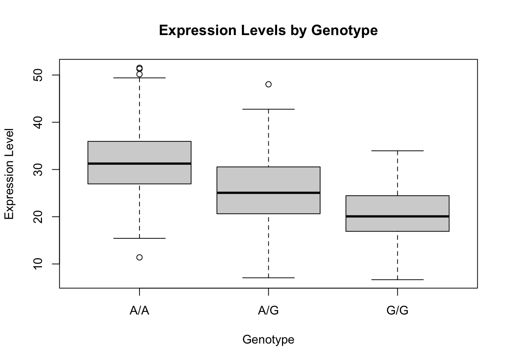
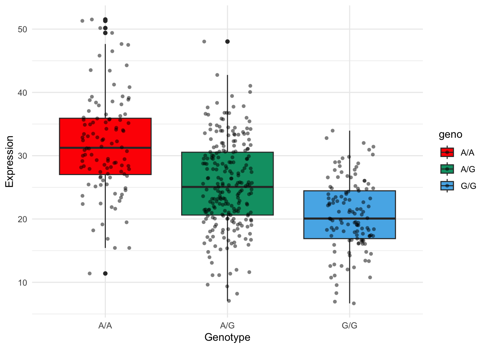

file_path ='/mnt/data/rs8067378_ENSG00000172057.6.csv'# read the filedata <-read.table("rs8067378_ENSG00000172057.6.csv", header =TRUE, sep ="")# Display the first few rows of the dataframe to understand its structurehead(data)
boxplot(exp ~ geno, data = data, main ="Expression Levels by Genotype",xlab ="Genotype", ylab ="Expression Level")

library(ggplot2)ggplot(data, aes(x=geno, y=exp, fill=geno)) +geom_boxplot() +geom_jitter(shape=16, position=position_jitter(0.2), alpha=0.5) +# Adds the points on the plotscale_fill_manual(values=c("#FF0000","#009E73", "#56B4E9")) +# Change colors as neededlabs(x="Genotype", y="Expression") +theme_minimal()

The median expression level for the genotype A/A is higher than for G/G. The interquartile range (IQR), which represents the middle 50% of the data, is narrower for G/G than for A/A, suggesting that expression levels for G/G are more consistent compared to A/A. There are some outliers in both groups, but especially in the A/A group. These patterns suggest the A/A genotype may be linked to increased ORMDL3 expression compared to G/G.